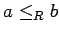
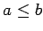
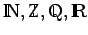

Inhalt Index DeskTop Bronstein

 Algebra und Diskrete Mathematik Mengenlehre Äquivalenz- und Ordnungsrelationen
Algebra und Diskrete Mathematik Mengenlehre Äquivalenz- und Ordnungsrelationen


Eine binäre Relation R in einer Menge A heißt Ordnung oder Ordnungsrelation, wenn R reflexiv, antisymmetrisch und transitiv ist. Ist R zusätzlich linear (s. (5.80)), so heißt R vollständige Ordnung, vollständige Ordnungsrelation oder Kette. Die Menge A heißt dann durch R geordnet bzw. vollständig geordnet. In einer vollständig geordneten Menge sind also je zwei Elemente vergleichbar. Statt aRb verwendet man auch die Bezeichnung  oder  wenn die Ordnungsrelation R aus dem Zusammenhang bekannt ist.
Anstelle von Ordnung ist auch die Bezeichnung Halbordnung oder partielle Ordnung üblich.
| Beispiel A |
|
Die Zahlenbereiche  sind durch die übliche Beziehung |
| Beispiel B |
|
Die Teilmengenbeziehung ist eine Ordnung, die nicht vollständig ist. |
| Beispiel C |
|
Die lexikographische Ordnung auf den Wörtern der deutschen Sprache ist eine Kette. |
Bemerkung: DEDEKINDscher Schnitt